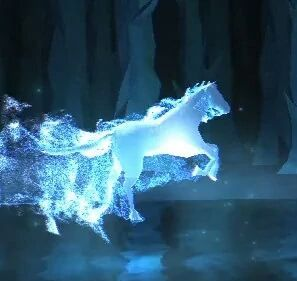

Odabrao/la si Livadu!
Tvoj patronus je Konj
Konj je bio patronus mnogih velikih carobnjaka.Konji su veoma pametne i spretne zivotinje. Konja kao patronus znaci da si veoma odvazna i pametna osoba koja kada nesto naumi to i ostvari. I u tebi se krije veliki carobnjak! A sada samo napred i iskoristi svoj patronus. Expectoooooooooooo patroooooooooonuuum!